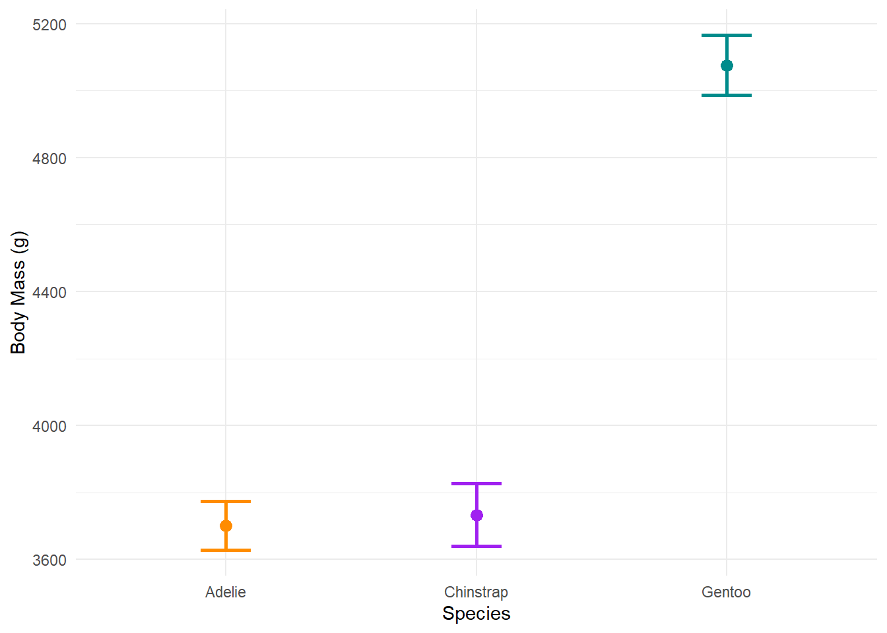

install.packages("rmarkdown")RMarkdown 101
Introduction & Setup
Hi class! This is a HTML output of an R Markdown document. To get started on using R Markdown, make sure that you install the rmarkdown package.
Getting started with R Markdown
To create an R Markdown (.rmd file), go to File > New File > R Markdown OR simply click the little down arrow shown in the screenshot below.
A pop-up window will appear and you can enter in your desired information (Title, Author, Date) and settings. For this course, please select HTML as the Default Output Format.
Setting up your HTML output
YAML - Yet Another Markup Language
The first customisable option for RMarkdown files is the metadata, which is the top most portion of your RMarkdown code.
You can also recognise it as the part that is written between a pair of three dashes. When you create a new RMarkdown file, it usually looks like this:
---
title: "Assignment"
author: "Xin Rui"
date: "2022-08-16"
output: html_document
---What you see above is using the YAML syntax, which you can customise. For example, the metadata below does three things:
Creates an option to show/hide your code in the HTML output
Inserts a table of contents that is always on the left panel when scrolling through the HTML output
Creates a HTML output with the flatly theme.
---
title: "Assignment"
author: "Xin Rui"
date: "2022-08-16"
output:
html_document:
code_folding: show
toc: true
toc_float: true
theme: flatly
---Code chunks and changing chunk options
Code chunks, as the name suggests, are where you insert your codes. You can insert chunks into your markdown file with the keyboard shortcut Ctrl + Alt + I (Mac: Cmd + Option + I).
You can customise the options in your chunks to show/hide the information that is shown in your code. For instance, we normally hide the “messages” and “warnings” in the output since that does not value add to what you want to show.
As it will be madness to customise the options of every single chunk in your file, you can create a general setup chunk at the top of your file, with this code:
knitr::opts_chunk$set(message = FALSE, warning = FALSE)
# hides messages & warningsThis then sets the chunk options for every subsequent chunk in your file. If you would like to customise each individual chunk for a specific purpose, you will need to include that in the top section of that chunk (i.e. the section between the {}).
Here are some commonly used options and what they do:
- Adjust figure dimensions:
fig.height = "value"; fig.width = "value" - Include figure caption:
fig.cap = "caption" - Shows code but does not run it:
eval = FALSE(default is TRUE)
You can add labels to your code chunks to identify them, especially when its very easy to get lost in a lengthy document with loads of codes. Just remember that you cannot have two or more chunks with the same label >> This will cause an error when knitting your file.
As a good practice, test run each chunk to make sure your codes are working before knitting the entire file.
Markdown Syntax
The text in a Markdown is written with the Markdown syntax (i.e. Pandoc’s Markdown). Using the syntax allows us to format our text. Check out the examples below:
- BOLD: pair of double asterisks (**)
- italics: pair of underscores or asterisks (* or _)
Headers are defined using the (#) sign, and can be used to create your table of contents.
# First-level header
## Second-level header
### Third-level headerThe R Markdown Cheat Sheet, which is accessible through RStudio (Help > Cheat Sheets), provides a list of commonly used syntax and other useful resources. Check out the links in the Useful Resources section too!
Understanding the Data - A Penguinüêß Example
Load packages & read dataset
library(tidyverse)
library(palmerpenguins)
library(ggfortify)
data(penguins)View data
To understand your given data set, it’s good practice to know what variables are included and the types of variables (e.g. continuous, categorical) you are dealing with. Here are some basic codes.
head(penguins) # view first 6 rows of data# A tibble: 6 × 8
species island bill_length_mm bill_depth_mm flipper_l…¹ body_…² sex year
<fct> <fct> <dbl> <dbl> <int> <int> <fct> <int>
1 Adelie Torgersen 39.1 18.7 181 3750 male 2007
2 Adelie Torgersen 39.5 17.4 186 3800 fema… 2007
3 Adelie Torgersen 40.3 18 195 3250 fema… 2007
4 Adelie Torgersen NA NA NA NA <NA> 2007
5 Adelie Torgersen 36.7 19.3 193 3450 fema… 2007
6 Adelie Torgersen 39.3 20.6 190 3650 male 2007
# … with abbreviated variable names ¹​flipper_length_mm, ²​body_mass_ghead() gives you a quick snapshot of your data as only the first 6 rows are presented. If you would like to see the entire dataset, you can run View().
str(penguins) # view data structuretibble [344 × 8] (S3: tbl_df/tbl/data.frame)
$ species : Factor w/ 3 levels "Adelie","Chinstrap",..: 1 1 1 1 1 1 1 1 1 1 ...
$ island : Factor w/ 3 levels "Biscoe","Dream",..: 3 3 3 3 3 3 3 3 3 3 ...
$ bill_length_mm : num [1:344] 39.1 39.5 40.3 NA 36.7 39.3 38.9 39.2 34.1 42 ...
$ bill_depth_mm : num [1:344] 18.7 17.4 18 NA 19.3 20.6 17.8 19.6 18.1 20.2 ...
$ flipper_length_mm: int [1:344] 181 186 195 NA 193 190 181 195 193 190 ...
$ body_mass_g : int [1:344] 3750 3800 3250 NA 3450 3650 3625 4675 3475 4250 ...
$ sex : Factor w/ 2 levels "female","male": 2 1 1 NA 1 2 1 2 NA NA ...
$ year : int [1:344] 2007 2007 2007 2007 2007 2007 2007 2007 2007 2007 ...summary(penguins) # view mean, min, max etc of each variable species island bill_length_mm bill_depth_mm
Adelie :152 Biscoe :168 Min. :32.10 Min. :13.10
Chinstrap: 68 Dream :124 1st Qu.:39.23 1st Qu.:15.60
Gentoo :124 Torgersen: 52 Median :44.45 Median :17.30
Mean :43.92 Mean :17.15
3rd Qu.:48.50 3rd Qu.:18.70
Max. :59.60 Max. :21.50
NA's :2 NA's :2
flipper_length_mm body_mass_g sex year
Min. :172.0 Min. :2700 female:165 Min. :2007
1st Qu.:190.0 1st Qu.:3550 male :168 1st Qu.:2007
Median :197.0 Median :4050 NA's : 11 Median :2008
Mean :200.9 Mean :4202 Mean :2008
3rd Qu.:213.0 3rd Qu.:4750 3rd Qu.:2009
Max. :231.0 Max. :6300 Max. :2009
NA's :2 NA's :2 str() and summary() are a really useful functions that tell you the types of variables and provides descriptive statistics for each variable. Now we know that this is a dataset of body measurements and traits of 3 different penguin species, collected from 3 different islands.
Data Exploration
Q. Does body mass differ among the three penguin species?
Graphing your data
Let’s use a histogram to visualise the spread of body mass among the three penguin species.
penguins %>% ggplot() +
# Set aesthetics (x, y, fill)
geom_histogram(aes(x = body_mass_g,
fill = species),
alpha = 0.5) +
# Split the graph by species
facet_grid(rows = vars(species)) +
# Format axis labels
labs(x = "Body Mass (g)", y = "Count") +
# Add colours manually
scale_fill_manual(values = c("darkorange",
"purple",
"cyan4")) +
# Set plot theme
theme_minimal() +
# Remove legend
theme(legend.position = "none")From the histogram, we noticed that there is a difference in body mass among the three species and the spread of data for each species is not skewed.
Showing the numbers.
# Using dplyr functions
penguins_summary <-
penguins %>%
group_by(species) %>%
summarise(count = n(),
mean = mean(body_mass_g, na.rm = TRUE),
ssd = sd(body_mass_g, na.rm = TRUE)) %>%
mutate(se = ssd / sqrt(count),
lower_ci = mean - qt(1 - (0.05 / 2), count - 1) * se,
upper_ci = mean + qt(1 - (0.05 / 2), count - 1) * se)
# Nice table output
knitr::kable(penguins_summary)| species | count | mean | ssd | se | lower_ci | upper_ci |
|---|---|---|---|---|---|---|
| Adelie | 152 | 3700.662 | 458.5661 | 37.19462 | 3627.173 | 3774.151 |
| Chinstrap | 68 | 3733.088 | 384.3351 | 46.60747 | 3640.059 | 3826.117 |
| Gentoo | 124 | 5076.016 | 504.1162 | 45.27097 | 4986.405 | 5165.627 |
Choosing the final plot
Since our data is not skewed, we can show the difference in means and confidence intervals of the body mass among the three penguin species.
Instead of a boxplot (which shows the median and quartiles), we plot the means and confidence intervals:
penguins_summary %>% ggplot() +
geom_point(aes(x = species, y = mean,
colour = species),
size = 3) +
geom_errorbar(aes(x = species,
ymin = lower_ci,
ymax = upper_ci,
colour = species),
width = 0.2, size = 1) +
labs(x = "Species", y = "Body Mass (g)",) +
scale_colour_manual(values = c("darkorange",
"purple",
"cyan4")) +
theme_minimal() +
theme(legend.position = "none")
And there you have it! Bear in mind that effective data visualisation is just one part of presenting your results and you‚Äôll need to also think about choosing the right plots depending on what analyses you used. We will be covering this throughout the course - so stay tuned! üòé
Useful Resources
There‚Äôs a huge variety of available resources on using RStudio & R Markdown and one can easily get lost in this deep rabbit hole. Here is a list of our recommended resources to get you started. We highly recommend going through at least the resources in bold. üòÑ
Installing R & RStudio
Updating R, RStudio & packages
- https://www.linkedin.com/pulse/3-methods-update-r-rstudio-windows-mac-woratana-ngarmtrakulchol
- https://rfortherestofus.com/2020/09/how-to-update-rstudio-r-packages/
Installing packages
R Markdown
Data Visualisation
Detailed Guides to R